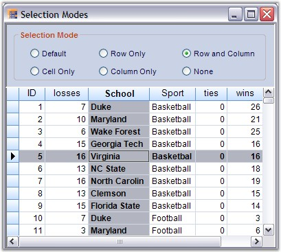

Grouping Grid selection behavior can also be customized by handling appropriate events as required. Here is an example implementation that focuses the current selection onto the desired grid elements like only the Current Cell, only the entire Row that contains the current cell, only the entire column that contains the current cell or both the row and the column that contains the current cell. The focused grid element is highlighted to show the current selection.
Selection Options
|
Name |
Description |
|
Cell Only |
Selects only the individual cells. |
|
Row Only |
Selects only the row. |
|
Column Only |
Selects only the column. |
|
Row and Column |
Selects the row and the column with respect to the current cell. |
|
Default |
Enables ListBoxSelection mode by default. |
|
None |
Disable the cell selection. |
Implementation
Follow the steps below to create a sample that shows the above selections.
1. Create a grid grouping control and bind it to any data table. This example uses the grouping grid that has been bound to the Statistics Table from Northwind.MDB.
2. Setup the designer to add options for different selection types. Add six radio buttons to the form to enable the selection options Cell Only, Row Only, Column Only, Row and Column, Default and None.
3. Set the required flags with respect to the current cell.
|
[C#]
this.gridGroupingControl1.TableModel.Options.RefreshCurrentCellBehavior = GridRefreshCurrentCellBehavior.RefreshCell; this.gridGroupingControl1.TableModel.Options.ShowCurrentCellBorderBehavior = GridShowCurrentCellBorder.GrayWhenLostFocus; |
|
[VB.NET]
Me.gridGroupingControl1.TableModel.Options.RefreshCurrentCellBehavior = GridRefreshCurrentCellBehavior.RefreshCell Me.gridGroupingControl1.TableModel.Options.ShowCurrentCellBorderBehavior = GridShowCurrentCellBorder.GrayWhenLostFocus |
4. Handle PrepareViewStyleInfo event to focus the current selection according to the chosen selection type. It also includes the code to highlight the current selection. This works for CellOnly, RowOnly, ColumnOnly and Row and Column types.
|
[C#]
this.gridGroupingControl1.TableControl.PrepareViewStyleInfo += new GridPrepareViewStyleInfoEventHandler(TableControl_PrepareViewStyleInfo);
void TableControl_PrepareViewStyleInfo(object sender, Syncfusion.Windows.Forms.Grid.GridPrepareViewStyleInfoEventArgs e) { GridCurrentCell cc = gridGroupingControl1.TableControl.CurrentCell; GridControlBase grid = this.gridGroupingControl1.TableControl.CurrentCell.Grid;
// Code for RowOnly. if (radioButton3.Checked) { // Highlight the current row with SystemColors.Highlight and Bold font. if (e.RowIndex > grid.Model.Rows.HeaderCount && e.ColIndex > grid.Model.Cols.HeaderCount && cc.HasCurrentCellAt(e.RowIndex)) { e.Style.Interior = new BrushInfo(SystemColors.Highlight); e.Style.TextColor = SystemColors.HighlightText; e.Style.Font.Bold = true; } }
// Code for CellOnly. else if (radioButton2.Checked) { // Highlight the current cell with SystemColors.Highlight and Bold font. if (e.RowIndex > grid.Model.Rows.HeaderCount && e.ColIndex > grid.Model.Cols.HeaderCount && cc.HasCurrentCellAt(e.RowIndex, e.ColIndex)) { e.Style.Interior = new BrushInfo(SystemColors.Highlight); e.Style.TextColor = SystemColors.HighlightText; e.Style.Font.Bold = true; } }
// Code for ColumnOnly. else if (radioButton4.Checked) { // Highlight the current column with SystemColors.Highlight and Bold font. if (e.RowIndex > grid.Model.Rows.HeaderCount && e.ColIndex > grid.Model.Cols.HeaderCount && cc.ColIndex == e.ColIndex) { e.Style.Interior = new BrushInfo(SystemColors.Highlight); e.Style.TextColor = SystemColors.HighlightText; e.Style.Font.Bold = true; } }
// Code for Row and Column. else if (radioButton5.Checked) { // Highlight the current row and column with SystemColors.Highlight and Bold font. if (e.RowIndex > grid.Model.Rows.HeaderCount && e.ColIndex > grid.Model.Cols.HeaderCount && (cc.RowIndex == e.RowIndex || cc.ColIndex == e.ColIndex)) { e.Style.Interior = new BrushInfo(SystemColors.Highlight); e.Style.TextColor = SystemColors.HighlightText; e.Style.Font.Bold = true; } } } |
|
[VB.NET]
AddHandler gridGroupingControl1.TableControl.PrepareViewStyleInfo, AddressOf TableControl_PrepareViewStyleInfo
Private Sub TableControl_PrepareViewStyleInfo(ByVal sender As Object, ByVal e As GridPrepareViewStyleInfoEventArgs) Dim cc As GridCurrentCell = gridGroupingControl1.TableControl.CurrentCell Dim grid As GridControlBase = Me.gridGroupingControl1.TableControl.CurrentCell.Grid
' Code for RowOnly. If radioButton3.Checked Then
' Highlight the current row with SystemColors.Highlight and Bold font. If e.RowIndex > grid.Model.Rows.HeaderCount AndAlso e.ColIndex > grid.Model.Cols.HeaderCount AndAlso cc.HasCurrentCellAt(e.RowIndex) Then e.Style.Interior = New BrushInfo(SystemColors.Highlight) e.Style.TextColor = SystemColors.HighlightText e.Style.Font.Bold = True End If
' Code for CellOnly. ElseIf radioButton2.Checked Then
' Highlight the current cell with SystemColors.Highlight and Bold font. If e.RowIndex > grid.Model.Rows.HeaderCount AndAlso e.ColIndex > grid.Model.Cols.HeaderCount AndAlso cc.HasCurrentCellAt(e.RowIndex, e.ColIndex) Then e.Style.Interior = New BrushInfo(SystemColors.Highlight) e.Style.TextColor = SystemColors.HighlightText e.Style.Font.Bold = True End If
' Code for ColumnOnly. ElseIf radioButton4.Checked Then
' Highlight the current column with SystemColors.Highlight and Bold font. If e.RowIndex > grid.Model.Rows.HeaderCount AndAlso e.ColIndex > grid.Model.Cols.HeaderCount AndAlso cc.ColIndex = e.ColIndex Then e.Style.Interior = New BrushInfo(SystemColors.Highlight) e.Style.TextColor = SystemColors.HighlightText e.Style.Font.Bold = True End If
' Code for Row and Column. ElseIf radioButton5.Checked Then
' Highlight the current row and column with SystemColors.Highlight and Bold font. If e.RowIndex > grid.Model.Rows.HeaderCount AndAlso e.ColIndex > grid.Model.Cols.HeaderCount AndAlso (cc.RowIndex = e.RowIndex OrElse cc.ColIndex = e.ColIndex) Then e.Style.Interior = New BrushInfo(SystemColors.Highlight) e.Style.TextColor = SystemColors.HighlightText e.Style.Font.Bold = True End If End If End Sub |
5. Enable ListBoxSelection mode to expose the default selection.
|
[C#]
// Code for Default option. private void radioButton1_CheckedChanged(object sender, System.EventArgs e) { if (this.radioButton1.Checked) this.gridGroupingControl1.TableOptions.ListBoxSelectionMode = SelectionMode.One; else this.gridGroupingControl1.TableOptions.ListBoxSelectionMode = SelectionMode.None; foreach (Table t in this.gridGroupingControl1.Engine.EnumerateTables()) this.gridGroupingControl1.GetTable(t.TableDescriptor.Name).SelectedRecords.Clear(); } |
|
[VB.NET]
' Code for Default option. Private Sub radioButton1_CheckedChanged(ByVal sender As Object, ByVal e As System.EventArgs) Handles radioButton1.CheckedChanged If Me.radioButton1.Checked Then Me.gridGroupingControl1.TableOptions.ListBoxSelectionMode = SelectionMode.One Else Me.gridGroupingControl1.TableOptions.ListBoxSelectionMode = SelectionMode.None End If Dim t As Table For Each t In Me.gridGroupingControl1.Engine.EnumerateTables() Me.gridGroupingControl1.GetTable(t.TableDescriptor.Name).SelectedRecords.Clear() Next t End Sub |
6. Below is the code for None option that disables the selection.
|
[C#]
// Code for None option. private void radioButton6_CheckedChanged(object sender, System.EventArgs e) { if(this.radioButton6.Checked) this.gridGroupingControl1.TableModel.Options.ShowCurrentCellBorderBehavior = GridShowCurrentCellBorder.HideAlways; else this.gridGroupingControl1.TableModel.Options.ShowCurrentCellBorderBehavior = GridShowCurrentCellBorder.GrayWhenLostFocus; } |
|
[VB.NET]
' Code for None option. Private Sub radioButton6_CheckedChanged(ByVal sender As Object, ByVal e As System.EventArgs) Handles radioButton6.CheckedChanged If Me.radioButton6.Checked Then Me.gridGroupingControl1.TableModel.Options.ShowCurrentCellBorderBehavior = GridShowCurrentCellBorder.HideAlways Else Me.gridGroupingControl1.TableModel.Options.ShowCurrentCellBorderBehavior = GridShowCurrentCellBorder.GrayWhenLostFocus End If End Sub |
7. Refresh the table control once the selection type is changed. You could also handle TableControlCurrentCellActivating event for this purpose.
|
[C#]
private void radioButton2_CheckedChanged(object sender, System.EventArgs e) { this.gridGroupingControl1.TableControl.Refresh(); }
private void radioButton3_CheckedChanged(object sender, System.EventArgs e) { this.gridGroupingControl1.TableControl.Refresh(); }
private void radioButton4_CheckedChanged(object sender, System.EventArgs e) { this.gridGroupingControl1.TableControl.Refresh(); }
private void radioButton5_CheckedChanged(object sender, System.EventArgs e) { this.gridGroupingControl1.TableControl.Refresh(); }
void TableControl_CurrentCellActivating(object sender, GridCurrentCellActivatingEventArgs e) { this.gridGroupingControl1.TableControl.Refresh(); } |
|
[VB.NET]
Private Sub radioButton2_CheckedChanged(ByVal sender As Object, ByVal e As System.EventArgs) Handles radioButton2.CheckedChanged Me.gridGroupingControl1.TableControl.Refresh() End Sub
Private Sub radioButton3_CheckedChanged(ByVal sender As Object, ByVal e As System.EventArgs) Handles radioButton3.CheckedChanged Me.gridGroupingControl1.TableControl.Refresh() End Sub
Private Sub radioButton4_CheckedChanged(ByVal sender As Object, ByVal e As System.EventArgs) Handles radioButton4.CheckedChanged Me.gridGroupingControl1.TableControl.Refresh() End Sub
Private Sub radioButton5_CheckedChanged(ByVal sender As Object, ByVal e As System.EventArgs) Handles radioButton5.CheckedChanged Me.gridGroupingControl1.TableControl.Refresh() End Sub
Private Sub TableControl_CurrentCellActivating(ByVal sender As Object, ByVal e As GridCurrentCellActivatingEventArgs) Me.gridGroupingControl1.TableControl.Refresh() End Sub |
Here is a sample output that focuses the current row and column.

Figure 367: Focused Selection Illustrated
 Note: For more details, refer the following
browser sample:
Note: For more details, refer the following
browser sample:
<Install Location>\Syncfusion\EssentialStudio\[Version Number]\Windows\Grid.Grouping.Windows\Samples\2.0\Selection\Focused Selection Demo